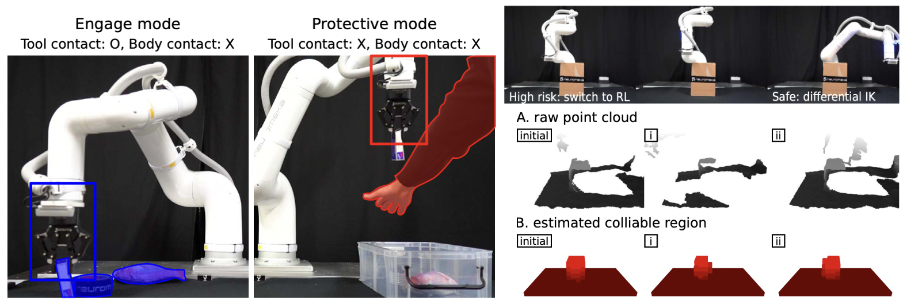

{{ page.title }}
IEEE Robotics and Automation Letters (RA-L) 2025
Joonho Lee Yunho Kim Seokjoon Kim Quan Nguyen Youngjin Heo
Neuromeka

|
Abstract
Ensuring safe and efficient operation of collaborative robots in human environments is challenging, especially in
dynamic settings where both obstacle motion and tasks change over time. Current robot controllers typically assume
full visibility and fixed tools, which can lead to collisions or overly conservative behavior. In our work, we
introduce a tool-aware collision avoidance system that adjusts in real time to different tool sizes and modes of
tool-environment interaction. Using a learned perception model, our system filters out robot and tool components
from the point cloud, reasons about occluded area, and predicts collision under partial observability. We then use
a control policy trained via constrained reinforcement learning to produce smooth avoidance maneuvers in under
10 milliseconds. In simulated and real-world tests, our approach outperforms traditional approaches (APF, MPPI) in
dynamic environments, while maintaining sub-millimeter accuracy. Moreover, our system operates with approximately
60% lower computational cost compared to a state-of-the-art GPU-based planner. Our approach provides modular,
efficient, and effective collision avoidance for robots operating in dynamic environments. We integrate our method
into a collaborative robot application and demonstrate its practical use for safe and responsive operation.
|
Paper: [link]
|
Bibtex
@ARTICLE{lee2025collisionAvoid,
author={Lee, Joonho and Kim, Yunho and Kim, Seokjoon and Nguyen, Quan and Heo, Youngjin},
journal={IEEE Robotics and Automation Letters},
title={Learning Fast, Tool-Aware Collision Avoidance for Collaborative Robots},
year={2025},
volume={10},
number={8},
pages={7731-7738},
keywords={Collision avoidance;Robots;Safety;Training;Service robots;Three-dimensional displays;Sensors;Real-time systems;Point cloud compression;Manipulator dynamics;Collaborative robots;Collision avoidance;Reinforcement Learning;Robot vision systems},
doi={10.1109/LRA.2025.3579207}}